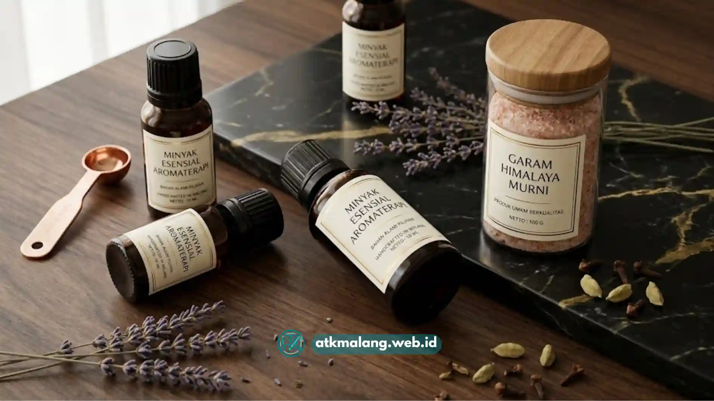

Kertas sticker HVS untuk printer inkjet rumahan sebaiknya dipilih berdasarkan ketebalan kertas, kualitas daya rekat, dan kompatibilitasnya dengan tinta pigment maupun dye agar hasil cetak label tidak mudah luntur.
- Ketebalan kertas mempengaruhi kemudahan potong dan kerapian label.
- Daya rekat yang baik mencegah label terkelupas setelah ditempel.
- Kompatibilitas dengan jenis tinta printer menentukan ketahanan warna.
- Ukuran lembar A4 paling umum dipakai untuk kebutuhan cetak rumahan.
- Penyimpanan kertas yang tepat menjaga kualitas sebelum dicetak.
Daftar Isi
Apa Ciri Kertas Sticker HVS yang Berkualitas Baik?
Kertas sticker HVS berkualitas baik ditandai dengan permukaan yang rata, daya serap tinta yang merata, serta lapisan perekat yang menempel kuat namun tetap mudah dilepas dari liner.
Permukaan kertas sebaiknya terasa halus dan tidak bergelombang saat dilipat ringan, sementara warnanya putih bersih, bukan putih kekuningan yang menandakan kualitas serat rendah.
Selain itu, lapisan perekat harus menempel rata di seluruh permukaan, tidak ada bagian yang terasa kering atau kosong sehingga label tidak mudah lepas.
Liner atau kertas pelindung di belakang juga harus mudah dilepas tanpa merobek label yang sudah dicetak.
Ketebalan kertas perlu terasa cukup kokoh saat dipegang, tidak terlalu tipis hingga mudah sobek saat proses pemotongan manual atau menggunakan mesin.
Kertas dengan ciri-ciri ini umumnya menghasilkan cetakan yang lebih rapi, terutama untuk produksi label dalam jumlah banyak di toko penyedia Alat Tulis Kantor Anda.
Bagaimana Cara Memilih Kertas Sticker HVS Sesuai Jenis Printer Inkjet?
Pemilihan kertas sticker HVS sebaiknya disesuaikan dengan jenis tinta printer inkjet yang digunakan, karena daya serap kertas berpengaruh langsung terhadap hasil akhir cetakan.
Printer inkjet umumnya menggunakan dua jenis tinta utama, yaitu tinta dye dan tinta pigment, yang masing-masing memiliki karakteristik penyerapan dan ketahanan yang berbeda.
Tinta dye cenderung lebih cepat meresap dan menghasilkan warna cerah namun kurang tahan air, sedangkan tinta pigment menghasilkan warna yang lebih stabil.
Untuk kertas sticker HVS yang permukaannya menyerap, kombinasi dengan tinta pigment umumnya memberikan hasil yang lebih tahan lama dibanding tinta dye.
Hal ini sangat penting terutama jika label akan disimpan atau terpapar pada produk dalam jangka waktu yang lebih panjang.
Sebelum mencetak dalam jumlah besar, disarankan melakukan uji cetak pada satu lembar kertas terlebih dahulu untuk memastikan hasil warna dan kecepatan kering tinta.

Pilih bahan sticker HVS yang tepat agar hasil cetakan label kemasan untuk produk UMKM Anda maksimal.Apa Saja Ukuran Kertas Sticker HVS yang Umum Dipakai untuk Kebutuhan Rumahan?
Ukuran A4 adalah format paling umum digunakan untuk kertas sticker HVS karena kompatibel dengan hampir semua jenis printer inkjet rumahan.
Selain ukuran A4 penuh, beberapa kertas sticker HVS juga tersedia dalam bentuk lembar yang sudah dipotong sesuai pola (die-cut), seperti bentuk bulat atau persegi.
Ada pula label khusus untuk kemasan botol yang telah disediakan template ukurannya secara presisi, memudahkan pencetakan tanpa setting berlebih.
Format yang sudah dipotong ini sangat memudahkan pelaku usaha rumahan yang tidak memiliki alat pemotong label secara manual.
Namun untuk kebutuhan cetak custom, kertas A4 polos tanpa pola potongan lebih fleksibel karena bisa disesuaikan dengan desain apa pun.
Hanya saja, kertas polos membutuhkan proses pemotongan tambahan menggunakan gunting atau alat *cutting sticker* setelah label selesai dicetak.
Bagaimana Cara Merawat Hasil Cetak Sticker HVS agar Tidak Mudah Pudar?
Hasil cetak sticker HVS dapat lebih tahan lama jika dibiarkan kering sempurna sebelum ditempel dan disimpan pada tempat yang terhindar dari kelembapan langsung.
Biarkan hasil cetak kering secara alami selama beberapa menit sebelum disentuh atau ditempel pada kemasan untuk mencegah tinta luntur.
Hindari menyimpan label di tempat yang terkena sinar matahari langsung dalam waktu lama karena radiasi UV dapat memudarkan warna tinta dye.
Simpan kertas sticker yang belum dipakai dalam kemasan tertutup untuk menghindari debu dan kelembapan yang dapat merusak lapisan perekatnya.
Jika label akan digunakan pada produk yang berpotensi terkena air, pertimbangkan melapisi dengan laminasi tambahan agar kualitas tetap terjaga.
Gunakan tinta pigment jika label membutuhkan ketahanan warna yang lebih baik dibanding tinta dye standar dalam operasional usaha berbasis Alat Tulis Kantor Anda.
Dengan perawatan yang tepat, kertas sticker HVS tetap bisa menjadi pilihan ekonomis yang layak diandalkan untuk kebutuhan label skala rumahan maupun UMKM.
Memilih merk kertas sticker HVS terbaik untuk printer inkjet rumahan sebaiknya didasarkan pada kualitas fisik kertas dan kompatibilitas dengan jenis tinta.
Melakukan uji cetak skala kecil sebelum membeli dalam jumlah besar dapat membantu memastikan kesesuaian kertas dengan printer yang dimiliki sehingga hasil label konsisten.